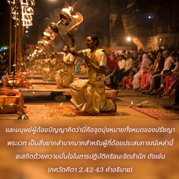
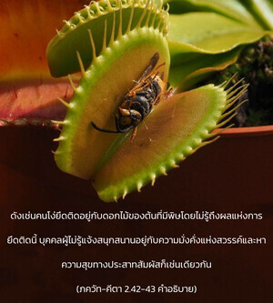

บุคคลผู้ด้อยปัญญาจะยึดติดอยู่กับคำพูดสำนวนโวหารในคัมภีร์พระเวทที่แนะนำกิจกรรมเพื่อผลประโยชน์ต่างๆ เช่น เจริญขึ้นไปสู่สรวงสวรรค์ เกิดในตระกูลดี มีอำนาจ และอื่นๆ จากความปรารถนาเพื่อสนองประสาทสัมผัสและมีชีวิตที่มั่งคั่ง พวกเขาจะกล่าวว่าไม่มีอะไรมากไปกว่านี้


บุคคลทั่วไปไม่ฉลาดเท่าไรนัก และด้วยความอวิชชาของพวกเขาส่วนใหญ่จะยึดติดในกิจกรรมเพื่อผลประโยชน์ที่คัมภีร์พระเวทแนะนำไว้ในบท กรฺม-กาณฺฑ พวกเขาไม่ต้องการอะไรมากไปกว่าข้อเสนอให้สนองประสาทสัมผัสเพื่อหาความเพลิดเพลินในชีวิตบนสวรรค์ที่มีสุรา นารี พร้อมทั้งความมั่งคั่งทางวัตถุอันเป็นปกติธรรมดา คัมภีร์พระเวทแนะนำพิธีบูชาหลายวิธีเพื่อให้ไปสู่สวรรค์โดยเฉพาะพิธีบูชา โชฺยติษฺโฏม ได้กล่าวไว้ว่าผู้ใดปรารถนาความเจริญก้าวหน้าไปสู่สวรรค์ต้องปฏิบัติพิธีบูชาเหล่านี้ และมนุษย์ผู้ด้อยปัญญาคิดว่านี่คือจุดมุ่งหมายทั้งหมดของปรัชญาพระเวท เป็นสิ่งยากลำบากมากสำหรับผู้ที่ด้อยประสบการณ์เหล่านี้จะสถิตด้วยความมั่นใจในการปฏิบัติกฺฤษฺณจิตสำนึก ดังเช่นคนโง่ยึดติดอยู่กับดอกไม้ของต้นที่มีพิษโดยไม่รู้ถึงผลแห่งการยึดติดนี้ บุคคลผู้ไม่รู้แจ้งสนุกสนานอยู่กับความมั่งคั่งแห่งสวรรค์ และหาความสุขทางประสาทสัมผัสก็เช่นเดียวกัน
ในบท กรฺม-กาณฺฑ ของคัมภีร์พระเวท ได้กล่าวไว้ว่า อปาม โสมมฺ อมฺฤตา อภูม และ อกฺษยฺยํ ห ไว จาตุรฺมาสฺย-ยาชินห์ สุกฺฤตํ ภวติ หมายความว่า ผู้ปฏิบัติตนเอย่างเคร่งครัดเป็นเวลาสี่เดือน มีสิทธิ์ดื่มเครื่องดื่ม โสม-รส เพื่อเป็นอมตะและมีความสุขตลอดกาล แม้ในโลกนี้บางคนกระตือรือร้นจะดื่ม โสม-รส เพื่อให้มีสุขภาพแข็งแรงเหมาะที่จะหาความสุขในการสนองประสาทสัมผัส บุคคลเช่นนี้ไม่มีความศรัทธาที่จะหลุดพ้นจากพันธนาการทางวัตถุ และจะยึดมั่นมากกับพิธีการบูชาอย่างหรูหราของพระเวท ส่วนมากเพื่อสนองประสาทสัมผัส และไม่ต้องการอะไรมากไปกว่าความสุขเหมือนชีวิตบนสวรรค์ เข้าใจว่ามีอุทยานชื่อ นนฺทน-กานน สถานที่ซึ่งเปิดโอกาสอย่างดีให้คบหาสมาคมกับนางฟ้าที่สวยสดงดงาม และมีไวน์ โสม-รส ให้ดื่มอย่างเหลือเฟื่อ ความสุขทางร่างกายเช่นนี้ก็คือความใคร่อย่างแน่นอน ดังนั้น จึงมีผู้ยึดติดอย่างจริงจังกับความสุขทางวัตถุที่ไม่ถาวรเช่นนี้ เสมือนดั่งตนเองเป็นเจ้าแห่งโลกวัตถุ